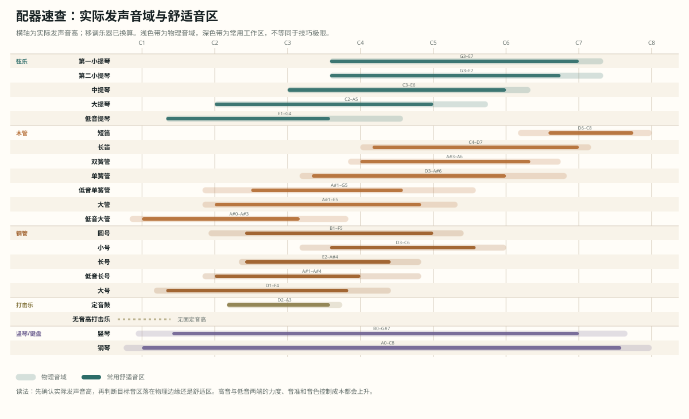
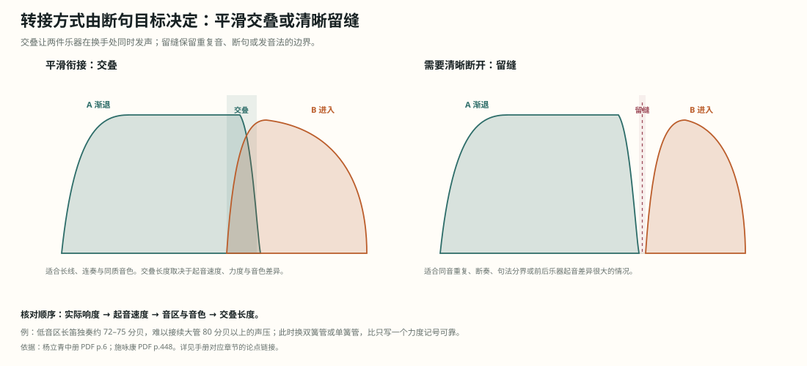

配器法理论体系与推演手册
依据 7 册（4 部）配器法教材整理。网页推演台位于 ../app/index.html。手册中的页码以 PDF 物理页为准，书内印刷页码另列；点击“教材页”可直接跳到该页扫描图、OCR 原文与对应论点锚点，本地服务运行时还可打开原 PDF 对应页。这本手册不按教材章节复述。它只回答四个问题：一段音乐由哪些结构层组成；听者此刻应该先听见什么；哪些乐器与音区能实现这个权重；哪些选择会在声学上互相抵消。
0. 先读：三类结论
- 教材直接依据：有明确页码和原文，例如同度全奏受音域限制、配器分析先拆结构、八度重复不增加新的结构因素。
- 体系性推论：由声学条件与多条教材规则合成，例如“旋律与伴奏共享音区时，先移动八度，再考虑力度记号”。
- 程序启发式：网页推演台的评分、三套方案和警告。它用于快速排除明显冲突，不代替试奏、总谱核对与听觉判断。
手册中的机制卡统一写成四段：原理、检查、用法、边界。比喻不承担论证；能写成频率、音区、时间、力度或演奏动作的地方，就直接写这些变量。
0.1 八条基本判断
这张表先给出判断顺序。后面的章节只是把这些原理展开到乐器、织体与总谱。
| 原理 | 物理/听觉依据 | 直接操作 |
|---|---|---|
| 音区改变频谱 | 共振峰位置相对固定，基频与谐波随音高移动；力度改变各次谐波的强度 | 先确定实际发声音高，再选乐器；同一旋律换音区后重新判断音色与力度余量 |
| 掩蔽来自重叠 | 频带、时间包络与声源方向重叠时，较弱成分的听辨阈值上升 | 先移音区或八度，再错开节奏与起音，再换音色，最后压缩力度 |
| 同度与八度不新增结构层 | 同度基频相同；八度基频成 2:1，谐波高度重合 | 要新增对位线，就写不同的音高、节奏或句法；加倍不能冒充新声部 |
| 混合加倍补频谱缺口 | 各乐器谐波与共振峰叠加；互补频带补足对应频段的能量，重叠频带增加掩蔽 | 先判断主乐器缺低频、高频还是起音，再选能补该处的乐器 |
| 低音区密度有上限 | 低频波长大，相邻分音容易落入同一临界带，产生粗糙感 | 低音区拉开根音、五度与八度；中高音区再填三音、七音与附加音或变化音 |
| 全奏分配权重 | 听者同时分辨的独立层有限；多个频带与结构层同时填充才形成宽频响度与清晰的全奏 | 旋律、低音、和声、节奏、持续各设位置与力度；不必全员同奏 |
| 转接需要交叠 | 不同乐器的起音速度、音色与力度曲线不同 | 后一乐器先进入，前一乐器稍后退出；交叠处匹配力度与发音 |
| 历史改变可用手段 | 乐器构造、按键与阀键、编制和演奏技术变化；声学条件不变 | 先确认时代乐器与音区限制，再解释写法；不用现代能力反推历史作品 |
还有两点必须同时成立：同样的力度记号在不同乐器与音区并不产生同样的响度；配器的“平衡”指按结构主次形成的相对强弱比例，所有声部等响并不构成平衡。
1. 总纲：配器在分配听觉权重
配器处理四组关系：
| 关系 | 要决定的事 | 可测变量 |
|---|---|---|
| 纵向 | 哪些音同时出现 | 音高、音程、和弦排列、声部间距 |
| 横向 | 哪些线在时间中独立 | 节奏、句法、起音、持续、换手 |
| 音色 | 谁与谁融合或分离 | 频谱、共振峰、瞬态、弱音器、演奏法 |
| 权重 | 听者先听见什么 | 音区、力度、事件密度、乐器数量、空间 |
操作顺序固定为：
结构层 → 角色优先级 → 音区与力度 → 乐器候选 → 同度/八度/混合/分部 → 掩蔽与平衡校验 → 记谱与可演奏性
这条顺序的意义在于：先改变结构层与音区，代价最低；先增加乐器数量，代价最高，且经常只增加响度。
1.1 术语校准
- 听觉权重：本手册用它表示某结构层在当前织体中被优先辨认的程度，不表示物理功率。它由音区、力度、事件密度、起音、音色和空间位置共同决定。
- 重量：教材原书有时用“音的重量”描述同度与八度的差别。本手册的操作说明改用“响度贡献、人数支撑与频带占用”，便于和可听结果对应。
- 响度贡献：某声部在整体听感中增加的相对响度，受音区、频谱、人数、演奏力度和厅堂影响；它不是单独可加的物理功率。
- 频带占用：某声部在哪些频率范围产生显著能量。两层的频带占用重叠越多，掩蔽与音准冲突的风险越高。
- 层次清晰：指各结构层能够同时被辨认，不指乐器数量少或配器简单。
2. 历史阶段：古典、扩张、现代
历史阶段改变的是乐器构造、常规编制、演奏技术与审美目标；声学条件不变。分析历史作品时，先确认当时可用的乐器，再判断配器选择。
| 阶段 | 新增手段 | 配器后果 | 未改变 |
|---|---|---|---|
| 古典时期，约 1700–1820 | 弦乐四声部、自然铜管、成对木管 | 低音与和声框架先成立；木管多作同度、八度补强或局部对比；铜管受调性与音高限制 | 频谱、掩蔽、瞬态、响度与音区规律 |
| 扩张时期，约 1820–1945 | 阀键铜管、辅助木管、竖琴、大型打击乐 | 铜管可奏完整半音并承担旋律；力度范围与音色混合扩大；前景、中景、背景成为整体分配问题 | 同上 |
| 现代时期，约 1900 至今 | 扩展技法、弱音器、噪声、极端音区、空间布置 | 音色、噪声、瞬态与空间可以直接构成结构；传统功能仍可用，但不再唯一 | 同上 |
扩张时期与现代时期在 1900 年前后重叠。这里的“扩张时期”按编制和新手段进入常规乐队的时间划分，不是“浪漫主义”的同义词。分析时按作品实际使用的乐器与手法判断，不能只按年份机械划分。
网页理论地图按同一分段设置“阶段重点”。选择阶段后，通用声学节点仍保留，只压暗该阶段次要的节点与连线；这样既能看历史差异，也不会把频谱、掩蔽、瞬态等跨时代原理误当成只在某一时期成立。
2.1 古典时期：约 1700–1820
弦乐四声部提供稳定框架。木管常以同度、八度或局部对比加入；自然铜管受调性与音高限制，通常承担号角式材料、持续音与结构点。低音与和声框架先成立，音色装饰随后加入。
阿德勒上，PDF p.16；印刷 p.4 施咏康，PDF p.8；印刷 p.4
判断要点：
- 先找弦乐四声部与低音进行，再看木管是重复、替换还是独立线条。
- 铜管的音高限制会直接影响旋律音与和声完整度；省略经常来自乐器条件。
- 层次清晰取决于角色分工与同音区竞争较少；乐器数量少本身不能保证。
2.2 扩张时期：约 1820–1945
阀键铜管扩大半音能力，辅助木管扩展高低端，竖琴与大型打击乐进入常规编制。力度范围、乐队规模和音色混合同时扩张，前景、中景、背景的分配成为整体配器问题。
阿德勒上，PDF p.17；印刷 p.5 杨立青下，PDF p.3；印刷 p.1025
阿德勒下，PDF p.19；印刷 p.554 辟斯顿，PDF p.7；印刷 p.8 施咏康，PDF p.131；印刷 p.127 施咏康，PDF p.132；印刷 p.128
判断要点：
- 铜管可以承担旋律、和声与低音，但强奏时占据宽频带，平衡不能按人数估算。
- 加倍从局部补强扩展到整组混合；需要区分同度支撑、八度扩展与独立声部。
- 大型全奏依靠频带和结构层分配，单纯叠加所有乐器会降低清晰度。
2.3 现代时期：约 1900 至今
音色、噪声、瞬态、极端音区和空间位置可以直接构成结构。传统角色分工仍可用，但不再是唯一语法。打击乐与扩展技法可以承担时间组织、音色分层与结构分界。
杨立青上，PDF p.29；印刷 p.5 阿德勒下，PDF p.8；印刷 p.543
判断要点：
- 先判断作品把什么当作结构参数：音高、音色、节奏、噪声、空间或过程。
- 极端音区与不稳定音色可以是有意选择；仍要核对力度、可演奏性和掩蔽。
- 现代配器也需要层级；层级可以由频谱、空间或时间形成。
3. 声学底层：四个变量
3.1 频谱：音色是谐波与共振峰的分布
一个音由基频和一系列谐波组成。乐器的管体、共鸣箱、膜面和演奏法会强调某些频带，形成共振峰。同一音高换到另一音区，谐波与共振峰的关系改变，音色和穿透力也随之改变。
杨立青上，PDF p.29；印刷 p.5 阿德勒下，PDF p.8；印刷 p.543
操作时先问三件事：
- 实际发声音高是什么？
- 该音是否位于乐器的舒适音区？
- 目标力度下，这件乐器的频谱会填补还是抢占已有频带？
3.2 瞬态：起音决定合奏是否形成单个事件
弓压、气流、舌奏、槌击和唇振的起始速度不同。多个乐器同奏时，起音越接近，融合越强；起音错开，即使音高相同也会被听成两个事件。
阿德勒上，PDF p.9 辟斯顿，PDF p.99；印刷 p.91
需要融合时，统一连断、发音法和进入点。需要分层时，可以让不同组别在起音、句法或音区上分开。
3.3 响度：加倍数量只解释一部分
感知响度受音区、频谱、持续时间、演奏力度、厅堂和听者位置影响。理想自由场中，两个同功率声源不相干叠加约增加 3 分贝，相干叠加约增加 6 分贝；听感响度接近翻倍通常需要约 10 分贝。乐器数量增加远不等于响度线性加倍，同频带叠加还会产生掩蔽与音准冲突。
杨立青中，PDF p.4；印刷 p.470 施咏康，PDF p.13；印刷 p.9 辟斯顿，PDF p.7；印刷 p.8
因此，平衡旋律与伴奏时先调整音区、音色和事件密度；力度记号只处理剩余差额。
3.4 掩蔽：重叠越强，弱者越难被听见
掩蔽取决于频带重叠、时间包络、声源方向与注意力。音区相同、节奏相同、起音相近，是风险最高的组合。解决顺序为：
- 移动音区或八度。
- 错开节奏、起音或句法。
- 更换音色或组别。
- 最后才压缩伴奏力度。
杨立青中，PDF p.4；印刷 p.470 施咏康，PDF p.13；印刷 p.9 辟斯顿，PDF p.7；印刷 p.8
4. 乐器能力：查询表不能代替上下文
乐器表至少需要六列：物理音域、舒适音区、可控力度、敏捷度、持续能力、融合/穿透倾向。每项都随音区与演奏法变化。
下图先给出实际发声音高与常用工作区的总览。力度上限、融合与穿透在表中是用于比较的相对评级，不是物理测量；边缘音区的控制成本仍需按具体演奏者和力度核对。

图 1｜实际发声音域与舒适音区。 移调乐器已换算；浅色带为物理音域，深色带为常用工作区，不等同于技巧极限。
| 乐器 | 实际音域 | 舒适音区 | 力度上限 | 融合/穿透 | 配器提示 |
|---|---|---|---|---|---|
| 第一小提琴 | G3–E7 | G3–C7 | fff | 5 / 4 | 音区连续，弓法、分句与弱音器都能改变起音和频谱；高把位穿透力上升。 |
| 第二小提琴 | G3–E7 | G3–A6 | fff | 5 / 3 | 与第一小提琴同质，适合内声部、对位与八度补强；同音区并列会提高融合与掩蔽。 |
| 中提琴 | C3–E6 | C3–C6 | ff | 5 / 3 | 中低音区厚，高音区张力增加；内声部与副旋律的常用声部。 |
| 大提琴 | C2–A5 | C2–C5 | fff | 5 / 4 | 低音区有基本响度贡献与低频支撑，高音区歌唱性强；与低音提琴叠加时通常写作八度。 |
| 低音提琴 | E1–G4 | E1–G3 | ff | 5 / 3 | 实际发声比记谱低八度；高音区音准与音量控制困难，通常与大提琴构成八度低音。 |
| 短笛 | D6–C8 | G6–A7 | fff | 2 / 5 | 实际发声高八度；极高频穿透力强，不适合作为普通和声填充。 |
| 长笛 | C4–D7 | D4–C7 | ff | 4 / 4 | 高音区穿透力强，低音区弱而气声多；长音需要换气，连奏依赖气柱与吐音控制。 |
| 双簧管 | A#3–A6 | C4–E6 | f | 3 / 5 | 频谱集中，辨识别度高；弱奏仍可穿透，因此和声填充时容易突出。 |
| 单簧管 | D3–A#6 | E3–C6 | ff | 5 / 3 | 低音区暗厚，中音区融合度高，高音区亮度上升；常作木管与弦乐之间的连接音色。 |
| 低音单簧管 | A#1–G5 | F#2–G4 | f | 4 / 3 | 低音区厚而不易过分突出，可补足木管低端；高音区音质变薄。 |
| 大管 | A#1–E5 | C2–A#4 | f | 4 / 4 | 低音区承担木管低音，中音区可作副旋律；高音区音准与音色控制要求高。 |
| 低音大管 | A#0–A#3 | C1–D3 | mf | 4 / 3 | 实际发声低八度；提供木管最低端的响度贡献与低频支撑，快速密集音型代价高。 |
| 圆号 | B1–F5 | F2–C5 | ff | 5 / 3 | 铜管中融合度最高；中音区可连接木管和弦乐，强奏时仍能覆盖较宽频带。 |
| 小号 | D3–C6 | G3–G5 | fff | 2 / 5 | 起音明确、穿透力高；同音区强奏容易压过木管与弦乐，不宜只按人数判断平衡。 |
| 长号 | E2–A#4 | F2–F4 | fff | 4 / 4 | 中低音区有明确核心；滑管允许连续滑音，但快速换把与连奏需要时间。 |
| 低音长号 | A#1–A#4 | C2–C4 | fff | 4 / 4 | 补强铜管与低音之间的下端，适合持续低音和强奏结构点。 |
| 大号 | D1–F4 | E1–A#3 | ff | 4 / 3 | 低频支撑明显；音区越低，和声间距越需要拉开，密集排列会失去清晰度。 |
| 定音鼓 | D2–A3 | D2–G3 | fff | 2 / 5 | 提供低频重音与结构落点；音高受调音限制，滚奏持续力强于单次击打。 |
| 无音高打击乐 | 无固定音高 | 依乐器而定 | fff | 1 / 5 | 主要组织起音、重音与时间边界；频带取决于具体乐器，不能按单一音高估算。 |
| 竖琴 | B0–G#7 | F1–C7 | f | 4 / 3 | 宽音域与琶音能力强；踏板转调、同音重复与和弦排列影响可演奏性。 |
| 钢琴 | A0–C8 | C1–G7 | fff | 3 / 4 | 宽音域与复调能力强；在乐队中持续力受制于击弦衰减，强奏融合需谨慎。 |
使用规则：
- 旋律、持续音和重要对位线优先放在舒适音区。
- 极端音区只用于有明确目标的局部效果，并复核力度与音准。
- 管乐写换气，弦乐写换弓与换把，铜管高音区计算唇力消耗。
- 移调乐器先换算实际发声音高，再判断音区与间距。
阿德勒上，PDF p.9 杨立青上，PDF p.29；印刷 p.5
5. 分析协议：把总谱拆回结构
辟斯顿的分析顺序可以直接转成日常工作流：
- 先忽略乐器音色，确定旋律、低音、和声背景、对位线、踏板与节奏层；辟斯顿把这一步称为“撤开配器”。
- 看每组乐器怎样分配到这些结构因素。
- 比较各因素的平衡、对比与分配结果。
- 深入每个因素，检查音色选择、声部重复、位置疏密与重音加强。
- 回到整乐章，检查全奏比例、结构统一与变化。
辟斯顿，PDF p.7；印刷 p.8 辟斯顿，PDF p.8；印刷 p.9 阿德勒下，PDF p.8；印刷 p.543 施咏康，PDF p.131；印刷 p.127
配器推演台采用同样的顺序，但把第四步拆成可计算项：音区覆盖、角色适配、掩蔽风险、敏捷度与持续能力。
5.1 结构层的最低清单
| 层 | 识别问题 | 常见写法 |
|---|---|---|
| 旋律 | 哪条线决定当前句法？ | 单件、同度、八度、混合音色 |
| 低音 | 哪个音确定根音与低音走向？ | 大提琴、低音提琴、大管、大号 |
| 和声 | 哪些音补全和弦性质？ | 木管、弦乐、圆号、长号 |
| 对位 | 哪条线与旋律同时独立？ | 副旋律、模仿、固定音型 |
| 踏板 | 哪个音持续固定中心或框架？ | 持续低音、中音持续、滚奏 |
| 节奏 | 哪个层组织时间与重音？ | 打击乐、固定音型、拨弦 |
结构层会随时间变化。分析时按短小乐段标注，避免把整首作品压成一个标签。
6. 角色优先级：先决定听什么
同一时刻可以有一个主要前景、一个到两个中景和一个背景。前景需要最清楚的音区、瞬态或力度；中景提供对位、节奏或和声支撑；背景降低攻击频率与音色突出度。
阿德勒下，PDF p.19；印刷 p.554 辟斯顿，PDF p.7；印刷 p.8 施咏康，PDF p.131；印刷 p.127 施咏康，PDF p.132；印刷 p.128
三种层级的实现方式：
| 层级 | 音区 | 节奏/起音 | 力度 | 常见乐器 |
|---|---|---|---|---|
| 前景 | 舒适且突出 | 清晰、独立 | 有余量 | 木管、弦乐、铜管独奏 |
| 中景 | 与前景分离 | 可独立辨认 | 中等 | 圆号、中提琴、大管、单簧管 |
| 背景 | 填充或低频 | 事件少、持续 | 低而稳定 | 弦乐、持续木管、竖琴、弱奏铜管 |
层级差异必须落到音区、起音时间、力度或事件密度上。只在分析表上写“前景”，不会改变听觉结果。
7. 组合语法：同度、八度、混合、分部
判断“加倍”是否新增结构层，先看音高关系，再看节奏与句法。下图把四种常见情况放在同一张表里；后文分别说明写法与边界。
图 2｜加倍方式与结构层关系。 同度、八度和平行音程通常只增加已有声部的频带与响度；只有音高、节奏、起音或句法提供独立信息时，才形成新的对位或结构层。
7.1 同度加倍
同度加倍让两个乐器奏同一实际音高。基频相同，差异在谐波、瞬态与音准。它巩固一个已有声部，增加同频带的响度贡献、音准稳定与融合，不增加新的旋律声部。
阿德勒下，PDF p.9；印刷 p.544 辟斯顿，PDF p.11；印刷 p.7
辟斯顿，PDF p.14；印刷 p.15 阿德勒下，PDF p.30；印刷 p.565
7.2 八度加倍
八度关系的基频成 2:1，谐波高度重合。八度加倍扩展音高平面与频带，不增加新的结构因素，但会改变声部间距和独立性。
阿德勒下，PDF p.9；印刷 p.544 辟斯顿，PDF p.11；印刷 p.7
辟斯顿，PDF p.34；印刷 p.30 辟斯顿，PDF p.35；印刷 p.31 阿德勒上，PDF p.24；印刷 p.12 阿德勒上，PDF p.25；印刷 p.13
这里有一个容易读错的细节。辟斯顿比较单个声部时指出：八度重复不增加该声部的响度贡献，同度重复会增加；原书把这一差别称为“音的重量”，指该声部在听感中的响度贡献与人数支撑。阿德勒讨论八度全奏时，响度与频带宽度来自多个八度、更多组别、铜管与定音鼓同时加入。两条结论并不矛盾，因为测量对象分别是“一个声部”和“整个乐队”。
操作上先分清目标：要增加一条旋律的响度贡献，优先增加同度人数或选择频谱互补的乐器；要让全奏跨过更大音域并增加总响度，才使用多八度分配。只给一个声部补一个八度，不能据此期待该声部响度翻倍。
低音八度用于扩展低频与稳定性，高音八度用于增加高频能量与穿透。每个声部都写八度会让所有层同时增加频带占用与响度，层次反而消失。
7.3 平行三度、六度
整条旋律用平行三度或六度重复时，附加声部与旋律保持固定音程，属于同一旋律声部的重复。听者不会自动把它当作独立对位线。
辟斯顿，PDF p.14；印刷 p.15 阿德勒下，PDF p.30；印刷 p.565
7.4 混合加倍
混合加倍的结果由谐波、共振峰和起音叠加决定。主乐器缺少某段频谱时，可以选择能在该处补充、且不会抢占主频段的乐器。高穿透乐器互相叠加，得到的是更响与更多掩蔽。
杨立青中，PDF p.4；印刷 p.470 施咏康，PDF p.13；印刷 p.9 辟斯顿，PDF p.7；印刷 p.8
7.5 分部与多弦
弦乐分部增加和弦音或独立声部，同时减少每一分部的人数、响度贡献与统一度。弱奏可以细分；强奏需要保留核心人数。
辟斯顿，PDF p.34；印刷 p.30 辟斯顿，PDF p.35；印刷 p.31 阿德勒上，PDF p.24；印刷 p.12 阿德勒上，PDF p.25；印刷 p.13
7.6 和弦排列
低音区需要更宽的音程，高音区可以更密。先安排根音、三音、七音与低音，再补附加音或变化音。重复哪个音取决于和声功能、旋律位置与音区。
辟斯顿，PDF p.97；印刷 p.89 阿德勒下，PDF p.25；印刷 p.560
8. 平衡与织体：把层级差异落实到可测变量
8.1 平衡的四变量
平衡判断按四个变量排序：音区 → 频谱 → 力度 → 时间。四者共同决定可听度，不能相互抵消；实际操作通常同时改变两到三种变量。
移动音区通常代价最低，错开时间次之；换音色需要重新分配乐器资源，压缩力度会损失动态范围。
杨立青中，PDF p.4；印刷 p.470 施咏康，PDF p.13；印刷 p.9 辟斯顿，PDF p.7；印刷 p.8
平衡的目标是让各要素按结构主次形成强弱比例，并不要求所有声部等响。杨立青明确指出，大部分管弦乐织体中不存在绝对的音量平衡；某些作品还会有意利用不均衡。
一个具体的量级例子：同为 ff，低音区第一小提琴声部约为 83.5 分贝，低音区长笛独奏约为 72 分贝；长笛改为 a2 也只有约 75 分贝。把两条线移高后，响度可接近到约 82 与 79.5 分贝。差距主要来自乐器与音区，不是力度记号。先移音区通常比继续加 ff 有效。
8.2 密度的定义
密度由同时发声的独立层数、音区占用和事件速率共同决定。同度加倍增加同频带的响度贡献与人数支撑，不增加可辨独立层数；增加独立节奏和独立音区才会显著增加听感复杂度。
8.3 特殊音色
泛音异常丰富或音色特殊的乐器，在弱奏时也可能从和声层中突出。它们适合旋律、独立音色层与结构强调，不适合无差别铺满内声部。
9. 时间过程：转接、呼应、全奏
9.1 乐器转接
转接时让后一乐器先进入，前一乐器稍后退出。交叠使换手处两件乐器同时发声：前一乐器仍在发声，后一乐器已经建立声音；交叠过长会让两个音色同时被听见。
施咏康，PDF p.448；印刷 p.444 杨立青下，PDF p.319；印刷 p.1341 阿德勒下，PDF p.61；印刷 p.596
转接还要核对实际响度。低音区长笛约 72–75 分贝，难以接续大管 80 分贝以上的声压；这里换双簧管或单簧管，比给长笛补一个力度记号更可靠。
杨立青中，PDF p.6；印刷 p.472 施咏康，PDF p.448；印刷 p.444

图 3｜交叠与留缝。 平滑衔接通常让后件提前进入；需要保留断句、重复音或重新起音时留出间隙。交叠长度取决于实际响度、起音速度、音区与音色差异。
9.2 呼应、对答与回声
用音色、音区和空间位置划分句法。呼与应放在不同组别；回声减少乐器数量、改变音区或降低力度。换音色过密会让句法失去统一轮廓。
施咏康，PDF p.495；印刷 p.491 杨立青下，PDF p.311；印刷 p.1333 杨立青下，PDF p.313；印刷 p.1335
9.3 全奏
全奏把旋律、低音、和声、节奏与持续层同时填满，并让各组在有效音区承担不同权重。真正的同度全奏受音域限制，数量很少；八度全奏通过扩展音区增加频带覆盖与响度。
阿德勒下，PDF p.9；印刷 p.544 辟斯顿，PDF p.11；印刷 p.7
施咏康，PDF p.542；印刷 p.538 阿德勒下，PDF p.9；印刷 p.544 阿德勒下，PDF p.8；印刷 p.543 杨立青下，PDF p.342；印刷 p.1364
频繁全奏会降低结构对比并造成听觉疲劳。全奏的对比强度依赖它与较稀疏织体之间的差别；如果前面已经一直满员，后面再加乐器只能增加响度，不能形成新的高点。
阿德勒下，PDF p.8；印刷 p.543 施咏康，PDF p.542；印刷 p.538
常见错误是所有乐器奏同一音型。高音区会拥挤，低音区可能空洞，铜管会压过木管与弦乐。部分全奏经常比全体全奏更清楚。
9.4 高潮
高潮依靠多个参数同时变化：频带宽度、音区跨度、力度、事件密度与和声张力。所有参数同时达到上限后，后续变化缺少参照。
9.5 问题定位：症状、首选动作与代价
排练和改谱时，先按症状定位，不要从“再加一层”开始。下表的顺序按修改代价从低到高排列。
| 症状 | 先检查 | 首选修正 | 再考虑 | 不要先做 |
|---|---|---|---|---|
| 旋律被伴奏盖住 | 实际音区、节奏和起音是否重叠 | 移动八度或错开节奏、起音 | 换音色、减薄伴奏 | 先加旋律力度或增加同度人数 |
| 低音糊成一片 | 最低音与上方音程、低音区同时发声数 | 拉开根音、五度与八度，删去低音区的密集三音 | 重新分配大提琴、低音提琴、大管与大号 | 用更多低音乐器补响度 |
| 全奏不宽或不响 | 是否所有人奏同一音型；各组是否承担不同结构层 | 把旋律、低音、和声、节奏、持续分到不同音区与材料 | 增加八度或混合音色 | 所有人齐奏同一节奏 |
| 转接处断裂 | 前后实际响度、起音速度与音区 | 后件提前进入，前件稍晚退出，并匹配力度与发音 | 换同族或音色接近的乐器 | 只在谱面写相同力度 |
| 某件木管从和声层突出 | 该乐器是否音色特殊、泛音丰富或位于高共振区 | 移到内声部或换更融合的乐器 | 降低局部力度或加弱音器 | 把它当普通和声继续叠加 |
| 打击乐遮住乐队 | 具体鼓种、击法、余音与频带 | 换乐器或击法，缩短余音与重音密度 | 调整位置或减少同时事件 | 只把力度写轻 |
| 铜管压过木管与弦乐 | 铜管音区、发音点、持续强奏长度与人数 | 移开八度、错开起音、缩短强奏 | 改用较轻的铜管配置 | 只让木管和弦乐吹得更响 |
| 高潮之后无法继续 | 前面是否长期保持最大密度与力度 | 预留未使用的频带、音区、乐器组或节奏密度 | 改变音色或和声张力 | 继续增加乐器 |
10. 操作流程：从材料到总谱
- 拆层：标出旋律、低音、和声、对位、踏板、节奏。
- 排优先级：每段只设一个主要前景，其余层降为中景或背景。
- 定音区：先写实际发声音高，避免所有层占同一八度。
- 选乐器：按舒适音区、力度、持续、敏捷与融合度筛选。
- 定组合：决定单件、同度、八度、混合、分部或和弦分配。
- 查掩蔽：按音区、时间、音色、力度的顺序处理冲突。
- 查过程：转接是否交叠，呼应是否成句，高潮是否有准备与释放。
- 查可演奏性：换气、换弓、换把、耐力、移调、分谱与记谱。
阿德勒上，PDF p.9 辟斯顿，PDF p.99；印刷 p.91
11. 网页推演台怎样工作
推演台把每层写成七项输入：角色、音高范围、力度、事件密度、持续时间、优先级和分配方式。分配方式有两种：
- 自动推荐：引擎从当前编制中筛选乐器，并可自动增加同度或八度声部。
- 手选组合：用户一次指定多件乐器，并为每件乐器选择低八度、同度或高八度。手选层不再自动补声部，且在三套方案中保持不变；三套方案的差异只来自其余自动层。
引擎按以下步骤输出三套方案：
- 按优先级排序结构层。
- 对每件乐器计算音区覆盖、角色适配、力度上限、敏捷度与持续能力。
- 对已分配层计算音区重叠、组别相似度与掩蔽惩罚，并保留同一层排名靠前的落选候选。
- 生成“清晰优先”“标准平衡”“扩展全奏”三套权重。
- 报告音区边缘、敏捷度不足、持续能力不足、铜管权重与旋律层重复过多；手选层另检查乐器是否属于当前编制、实际发声音域是否超出乐器音域，以及角色适配是否偏低。
三套方案分别用于：
- 清晰优先：检查结构和声部能否被分辨。
- 标准平衡：作为常规配器起点。
- 扩展全奏：检查增加八度与混合音色后是否仍有层级。
程序输出是可编辑的配器计划；它不作曲。任何方案都要回到总谱、试奏和厅堂中核对。
手选乐器不在当前编制或超出实际音域时，程序保留用户的选择并给出警告，不自动替换为“更合适”的乐器。这样可以把人员、音域与音色代价明确留在方案里，而不是让算法暗中改题。
界面中的分数只用于同一结构层内部的候选比较，不是作品质量分，也不能跨层相加。展开“评分与备选”可以看到舒适音区、角色适配、力度余量、敏捷度、持续力、掩蔽惩罚，以及同一层的第二、第三候选；这样能看出某项选择是明显占优，还是只在当前规则下略高。
12. 机制卡：24 条可检验判断
以下卡片由网页同一份数据生成。每张卡给出原理、检查、用法、边界与教材页码，并标出该条属于“教材直接陈述”还是“教材定义与声学推论”。网页版同时显示对应段落的局部影印。
M01｜同一音高在不同音区的频谱不同
依据类型：教材直接陈述
- 原理：乐器的音色随音区改变：共振峰、谐波强度、噪声成分和可控力度都会变化。音域表只回答“能不能奏”，配器要求回答“在这个音区是否合用”。
- 检查：把同一个旋律分别移到乐器低、中、高音区，先听音色和力度余量，再看总谱是否需要换乐器。
- 用法：旋律、持续音、和声填充与全奏高声部都先按有效音区筛选。
- 边界：不要用弱奏音区的印象判断强奏；力度改变会改变频谱和穿透力。
- 教材：杨立青上 PDF p.29 · 阿德勒下 PDF p.8 · 阿德勒上 PDF p.9 · 杨立青上 PDF p.29
M02｜起音先被听见，稳态随后才被辨认
依据类型：教材定义与声学推论
- 原理：弓压、气流、舌奏、槌击和唇振形成不同的瞬态。多个乐器同时起音时，瞬态是否对齐决定融合或分裂。
- 检查：把注意力放在每个声部的第一个音和长音中段；听合奏是否形成单个起音事件。
- 用法：同度加倍、齐奏、乐器转接和打击乐与乐队的同步。
- 边界：不同乐器的自然起音速度不同，完全对齐有时需要改变发音法或让后一乐器提前进入。
- 教材：阿德勒上 PDF p.9 · 辟斯顿 PDF p.99
M03｜掩蔽发生在重叠处
依据类型：教材定义与声学推论
- 原理：两个声音在频带、时间包络和空间位置上重叠时，较弱者会被遮住。音高相同、节奏相同、起音相近，是风险最高的组合。
- 检查：先看旋律与内声部是否落在同一八度，再看节奏和起音是否相同；最后才看力度。
- 用法：解决旋律被伴奏盖住、对位线消失、内声部听不见的问题。
- 边界：改变音区最有效；只改音色有时仍会留下相同频带的竞争。
- 教材：杨立青中 PDF p.4 · 施咏康 PDF p.13 · 辟斯顿 PDF p.7 · 杨立青中 PDF p.5 · 杨立青中 PDF p.7
M04｜加倍两件乐器，不会自动得到两倍响度
依据类型：教材定义与声学推论
- 原理：响度感知同时受音区、频谱、持续时间和听力曲线影响。理想自由场中，同功率声源不相干叠加约 +3 分贝，相干叠加约 +6 分贝；听感翻倍通常需要约 +10 分贝。乐器重复远不等于响度线性加倍，同频带叠加还可能产生掩蔽与音准冲突。
- 检查：把加倍层单独静音，比较它是否真的增加了需要的响度贡献、人数支撑或清晰度，而不只是更响。
- 用法：平衡旋律与伴奏、控制全奏、判断是否需要八度或混合音色。
- 边界：实际声压还受演奏者、厅堂和座位影响；不能用固定倍数当作总谱规则。
- 教材：杨立青中 PDF p.4 · 施咏康 PDF p.13 · 辟斯顿 PDF p.7 · 杨立青中 PDF p.5
M05｜同度加倍增加一个声部的支撑
依据类型：教材直接陈述
- 原理：同度加倍的两件乐器基频相同，差异在谐波和瞬态。它增加同频带的响度贡献、音准稳定和音色融合，不增加新的旋律或对位声部。
- 检查：问这段到底需要几个独立声部；如果答案不变，同度只是在增加已有声部的响度贡献与音准稳定。
- 用法：弱奏旋律、木管与弦乐融合、全奏核心、音准保障。
- 边界：同度叠加会提高掩蔽风险；两件乐器音准不完全一致时，会听到拍频或粗糙感。
- 教材：阿德勒下 PDF p.9 · 辟斯顿 PDF p.11 · 辟斯顿 PDF p.14 · 阿德勒下 PDF p.30
M06｜八度加倍扩展的是音高平面
依据类型：教材直接陈述
- 原理：八度关系的基频成 2:1，谐波高度重合，听感上仍归入同一个旋律声部。它加宽音高平面与频带；单个声部的响度贡献是否增加，要看演奏人数与同度支撑；整个乐队的响度与频带覆盖是否增加，还要看组别、音区跨度和低音。
- 检查：先比较加倍前后的最低音、最高音与中声部空间，再分清目标是增加单声部响度还是扩张全奏。
- 用法：低音线、旋律全奏、木管与弦乐结合、高潮。
- 边界：每个声部都写八度会让所有层同时增加频带占用与响度，层次反而消失。
- 教材：阿德勒下 PDF p.9 · 辟斯顿 PDF p.11 · 辟斯顿 PDF p.14 · 阿德勒下 PDF p.30
M07｜混合加倍补的是频谱缺口
依据类型：教材定义与声学推论
- 原理：不同乐器的谐波与共振峰叠加后形成新音色。互补的频带会补足对应频段的能量并提高清晰度；重叠的频带只会增加响度和掩蔽。
- 检查：先判断主乐器缺低频、高频还是起音，再选择补该处的乐器。
- 用法：混合旋律音色、和声填充、全奏、独立音色层。
- 边界：高穿透乐器叠加后仍会抢占同一频段；混合前先做音区分离。
- 教材：杨立青中 PDF p.4 · 施咏康 PDF p.13 · 辟斯顿 PDF p.7
M08｜平行三度、六度重复一个旋律
依据类型：教材直接陈述
- 原理：整条旋律用平行三度或六度重复时，附加声部与旋律保持固定音程，听感上属于同一旋律声部的重复，难以形成独立对位线。
- 检查：看附加声部是否始终跟随旋律轮廓、同节奏移动；若是，它承担重复而非独立声部。
- 用法：旋律重复、木管或弦乐平行进行、平行齐奏。
- 边界：平行音程会改变和声内容；低音区密集进行容易浑浊。
- 教材：辟斯顿 PDF p.14 · 阿德勒下 PDF p.30
M09｜低音区要拉开，高音区才宜收密
依据类型：教材定义与声学推论
- 原理：低频波长长，相邻低音的谐波更容易落在相近频带内，形成粗糙或浑浊。上方声部间距较小仍可分辨。
- 检查：先看最低两三个声部的音程；再看高音区是否堆了过多三度与二度。
- 用法：和弦配器、铜管和声、木管和弦、弦乐分部。
- 边界：间距没有固定数字；音色、力度和厅堂都会改变可接受的密度。
- 教材：辟斯顿 PDF p.97 · 阿德勒下 PDF p.25
M10｜和弦排列先分配功能音，再分配附加音
依据类型：教材定义与声学推论
- 原理：根音、三音、七音和变化音承担不同的和声识别任务。低音与旋律确定框架后，内声部才负责补全功能音与附加音。
- 检查：删去内声部，听和弦性质是否仍清楚；若不清楚，先补功能音。
- 用法：和弦配器、分部写作、缩谱与改编。
- 边界：重复哪个音取决于和声功能、旋律位置和音区，不能一律重复根音。
- 教材：辟斯顿 PDF p.97 · 阿德勒下 PDF p.25
M11｜先做结构分析，再谈乐器
依据类型：教材直接陈述
- 原理：把总谱还原为旋律、低音、和声背景、对位线、和弦与踏板等结构因素，才能判断乐器分配是否实现了音乐意图。
- 检查：用一小段总谱，在纸上只写结构层，不写乐器名；第二步再把乐器填回去。
- 用法：总谱分析、缩谱、改编、仿写。
- 边界：结构层会随时间变化；不要把一个标签贴满整段。
- 教材：辟斯顿 PDF p.7 · 辟斯顿 PDF p.8 · 阿德勒下 PDF p.8 · 施咏康 PDF p.131
M12｜踏板音固定调中心，也占用频带
依据类型：教材直接陈述
- 原理：持续音固定主音、属音或某个和弦音，使上方变化被听成同一中心内的运动。它同时占用一个演奏资源和一个频带，可能限制内声部。
- 检查：听持续音与上方每个和弦的关系；确认它提供稳定参照，没有覆盖旋律核心。
- 用法：引子、尾奏、和声扩张、全奏底层、调性确立。
- 边界：持续音过强会变成前景；音区落在旋律核心时会掩蔽上方。
- 教材：施咏康 PDF p.246 · 辟斯顿 PDF p.32 · 阿德勒下 PDF p.23
M13｜前景、中景、背景必须能被听出来
依据类型：教材直接陈述
- 原理：全乐队需要分层，但层级要靠音区、节奏、音色或力度差异实现。只在分析表上标“前景”没有声学效果。
- 检查：闭眼听段落，先说听见什么，再说总谱写了什么；两者顺序应基本一致。
- 用法：管弦乐织体、伴奏、协奏曲、全奏。
- 边界：前景不必总是最高音；低音或固定音型也可以成为主要听觉对象。
- 教材：阿德勒下 PDF p.19 · 辟斯顿 PDF p.7 · 施咏康 PDF p.131 · 施咏康 PDF p.132
M14｜特殊音色不适合做普通和声填充
依据类型：教材直接陈述
- 原理：泛音异常丰富或音色特殊的乐器，在弱奏时也可能从和声层中突出。它们适合承担旋律、独立音色层或结构强调，不适合无差别铺满内声部。
- 检查：把该乐器从和声层单独抽出听；如果它立即变成旋律或独立音色焦点，说明位置不适合。
- 用法：木管和声、全奏内声部、特殊乐器分配。
- 边界：特殊音色也可以在低力度、宽间距或同质音色包围下融入；判断要看具体上下文。
- 教材：杨立青中 PDF p.4
M15｜铜管强奏占据宽频带，也带来掩蔽
依据类型：教材定义与声学推论
- 原理：铜管强奏时谐波密集、瞬态明确，能迅速增加宽频带的声压。它们适合结构点、低音与高潮，也容易压过同音区的木管和弦乐。
- 检查：比较铜管进入前后的频带占用；确认它增加的是结构点的响度与频带覆盖，直接盖住旋律会掩盖结构。
- 用法：高潮、终止、节奏强调、低音支撑。
- 边界：圆号融合度高，小号与长号穿透力强；不能用“铜管”一概而论。
- 教材：阿德勒下 PDF p.9 · 辟斯顿 PDF p.11
M16｜弦乐分部增加声部，减少每部人数与响度贡献
依据类型：教材直接陈述
- 原理：同一组弦乐拆成更多声部，可获得完整和弦或独立对位；每个分部的演奏者减少，音准协调变难，强奏时的响度与统一度下降。
- 检查：先数独立声部，再看每部还剩多少人；弱奏可分部，强奏需保留核心人数。
- 用法：弦乐和声、内声部、对位、弱奏音色。
- 边界：双音与换位可以提供额外音，但会增加技术负担并改变音色。
- 教材：辟斯顿 PDF p.34 · 辟斯顿 PDF p.35 · 阿德勒上 PDF p.24 · 阿德勒上 PDF p.25 · 施咏康 PDF p.9 · 辟斯顿 PDF p.34
M17｜转接要交叠，不能只换乐器名
依据类型：教材直接陈述
- 原理：不同乐器的起音、音色和力度曲线不同。后一乐器先进入、前一乐器稍后退出，可以避免换手处出现音量凹陷或音色跳变。
- 检查：在换手处听是否有音量凹陷、音色跳变或发音错位；看总谱是否留了交叠。
- 用法：旋律换色、木管交接、铜管与弦乐交替、长线分配。
- 边界：交叠过长会让两个音色同时被听见，反而形成平行声部。
- 教材：施咏康 PDF p.448 · 杨立青下 PDF p.319 · 阿德勒下 PDF p.61 · 杨立青中 PDF p.6 · 施咏康 PDF p.448
M18｜呼应靠音色与位置分句
依据类型：教材直接陈述
- 原理：听者用音色、音区和空间位置追踪声源。把短句分给不同组别，可以形成对话；降低力度、改变音区或加弱音器可以形成回声。
- 检查：先不看总谱，记录每句来自哪个方向、哪组音色；再看是否符合句法。
- 用法：木管对答、铜管呼应、弦乐回声、戏剧性段落。
- 边界：换色过密会让句法碎裂；呼应需要保留可识别的节奏或轮廓。
- 教材：施咏康 PDF p.495 · 杨立青下 PDF p.311 · 杨立青下 PDF p.313
M19｜全奏分配权重，不要求全员同奏
依据类型：教材直接陈述
- 原理：全奏的力度来自多个频带和多个结构层同时被填充。若所有乐器同度齐奏，音域受限、瞬态拥挤，清晰度反而下降。
- 检查：把总谱分成旋律、低音、和声、节奏、持续五类；确认每类都有乐器，且没有全部挤在同一音区。
- 用法：高潮、终止、开场、结构分界。
- 边界：部分全奏常比全体全奏更有效；不要为了“全”而填满每个频带。
- 教材：阿德勒下 PDF p.9 · 辟斯顿 PDF p.11 · 施咏康 PDF p.542 · 阿德勒下 PDF p.9 · 阿德勒下 PDF p.8 · 杨立青下 PDF p.342 · 阿德勒下 PDF p.8 · 施咏康 PDF p.542
M20｜高潮需要参数变化的参照
依据类型：教材定义与声学推论
- 原理：听感增长依赖频谱变宽、音区扩展、力度上升、事件密度增加与张力变化。所有参数同时拉满后，后续变化失去参照。
- 检查：比较高潮前两小节、高潮点和高潮后一小节；确认至少有一个参数在前后形成差异。
- 用法：渐强、全奏高潮、曲式转折。
- 边界：高潮不一定最响；改变音色、密度或和声张力也能形成高点。
- 教材：阿德勒下 PDF p.9 · 辟斯顿 PDF p.11 · 阿德勒下 PDF p.8 · 施咏康 PDF p.542
M21｜打击乐组织时间与重音
依据类型：教材定义与声学推论
- 原理：无音高打击乐主要提供起音、重音、时间边界和噪声频带，不承担传统和声功能。它的清晰度取决于具体乐器、击法与力度。
- 检查：先问它标记的是拍点、结构分界还是持续噪声层或节奏层；再选择鼓种和击法。
- 用法：节奏强调、结构分界、噪声层、全奏。
- 边界：不同鼓种的频带与余音差异很大，不能用“打击乐”一个标签代替配器。
- 教材：阿德勒上 PDF p.9 · 杨立青上 PDF p.29 · 施咏康 PDF p.7 · 辟斯顿 PDF p.32 · 阿德勒上 PDF p.16
M22｜弱音器与揉弦改变频谱和瞬态
依据类型：教材定义与声学推论
- 原理：弦乐弱音器抑制部分高频并改变共振，铜管弱音器改变阻抗与指向性；揉弦使频率与谐波周期性变化。它们改变声音结构，不能只用“柔和”或“紧张”描述。
- 检查：比较加与不加时的起音、高频亮度、音量与融合度；不要只记“柔和”或“紧张”。
- 用法：音色变化、背景层、特殊效果、独奏与乐队对比。
- 边界：弱音器不等于降低力度；某些乐器加弱音器后仍保持很强穿透力。
- 教材：阿德勒上 PDF p.9 · 杨立青上 PDF p.29
M23｜可演奏性要单独检查
依据类型：教材直接陈述
- 原理：换气、换弓、换把、滑管位置、双音、耐力、移调和分谱都会限制配器方案。总谱上的音高正确，并不保证实际可演奏。
- 检查：按乐器逐项检查：音域、换气/换弓、连续强奏、特殊技法、移调与分谱。
- 用法：总谱定稿、改编、分谱准备、排练前校对。
- 边界：演奏者可以解决个别困难片段，但不能把例外当作常规写法。
- 教材：阿德勒上 PDF p.9 · 辟斯顿 PDF p.99 · 阿德勒上 PDF p.9 · 杨立青上 PDF p.29
M24｜历史编制决定可用手段
依据类型：教材直接陈述
- 原理：自然铜管受调性与音高限制，阀键铜管扩大半音能力；木管按键与演奏技术也随时代变化。历史风格判断必须落实到具体乐器与音区。
- 检查：先确认作品时代的乐器构造与编制，再判断省略、移调或音区选择是否出于实际限制。
- 用法：作品分析、历史仿写、改编制、风格辨识。
- 边界：历史限制不能解释所有配器选择；作曲家的个人偏好与演出条件同样重要。
- 教材：阿德勒上 PDF p.16 · 阿德勒上 PDF p.17 · 杨立青下 PDF p.3
13. 教材分工与页码规则
| 教材 | 本手册中的分工 | 已引用页数 | 页面入口 |
|---|---|---|---|
| 阿德勒《配器法教程》第三版 上册 | 乐器法与乐队历史 | 9、16、17、24、25 | 逐页影印 |
| 阿德勒《配器法教程》第三版 下册 | 整体配器、伴奏、改编与总谱 | 8、9、19、23、25、30、61 | 逐页影印 |
| 辟斯顿《配器法》 | 结构分析与配器语法 | 7、8、11、14、32、34、35、97、99 | 逐页影印 |
| 施咏康《管弦乐队配器法》 | 乐器组、织体与组合手法 | 7、8、9、13、131、132、246、448、495、542 | 逐页影印 |
| 杨立青《管弦乐配器教程》上册 | 声学基础、弦乐与木管 | 29 | 逐页影印 |
| 杨立青《管弦乐配器教程》中册 | 木管组合、打击乐、竖琴、铜管总论 | 4、5、6、7 | 逐页影印 |
| 杨立青《管弦乐配器教程》下册 | 铜管组合、全奏与复合织体 | 3、311、313、319、342 | 逐页影印 |
13.1 页码换算
- 阿德勒上册：PDF 页 = 印刷页 + 12。
- 阿德勒下册：PDF 页 = 印刷页 − 535。
- 辟斯顿：扫描页序有跳变，PDF 与印刷页的差值不固定；手册链接一律使用实测 PDF 页。
- 施咏康：PDF 页 = 印刷页 + 4。
- 杨立青上册：PDF 页 = 印刷页 + 24。
- 杨立青中册：PDF 页 = 印刷页 − 466。
- 杨立青下册：PDF 页 = 印刷页 − 1022。
- 其余教材若扫描页序有跳变，也以逐页实测为准，不用单一偏移推算。
13.2 怎样使用引文
引文用于核验论点，不替代原书谱例。涉及临时记号、配器细节和谱例编号时，点击教材页查看扫描图。OCR 文本只用于检索与复制。
手册中的教材链接都落到具体论点的页内锚点，而不是只打开书页顶部。资料共 7 册，来自 4 部著作：阿德勒上下册、辟斯顿一册、施咏康一册、杨立青上中下册。统计书目时以“部”为单位，统计扫描件时以“册”为单位，不能混写成 7 本。
14. 学习顺序：四轮练习
第一轮：单层
- 同一旋律分配给六件不同乐器，记录舒适音区、力度上限与起音差异。
- 同一和弦在低、中、高音区各排一次，检查低音区间距。
第二轮：两层
- 旋律加伴奏：先只改音区，再改节奏，最后改音色。
- 旋律加对位：保持两条线独立，禁止用同一音区与同一节奏。
第三轮：组合
- 同度、八度、平行三/六度、混合加倍各写四小节。
- 每次只改变一个变量，记录听感变化。
第四轮：过程
- 写一次乐器转接、一次呼应、一次部分全奏、一次全体全奏。
- 在高潮前后各留一个对照段，检查频带、力度、音区或事件密度是否形成前后差异。
15. 结论
配器的核心判断可以压成一句话：让每个结构层在正确的音区、以正确的力度和发音方式，获得正确的听觉权重。
乐器选择服务于这条判断。加倍、混合、全奏与历史风格都只是改变权重和频谱的手段。能够用音区、时间、频谱与力度解释的选择，才算真正掌握。